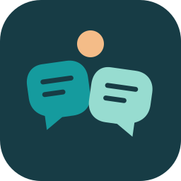

Familiar tide
Warm, familiar, quietly confident.

Ink
#173C45Primary
#159B9ESecondary
#97DCD0Accent
#F4BC88Canvas
#F7F4EDSurface
#FFFFFFAction
#107F81Stay in the conversation
Captions, people, and the world around you.